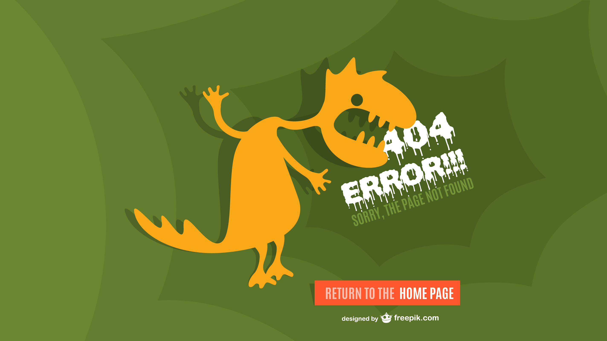

<div style="width: 100%;height: 100%;margin-top: 150px;text-align: center;overflow: hidden;">
    
    <button nz-button [nzType]="'primary'" 
    style=
    "background: #444;
    color: #fff;
    font-weight: bold;
    outline: none;
    border-color: #ddd;
    position: relative;
    top: 22px;
    left: -119px;" [nzSize]="size" (click)='goBack()'>
            <i class="anticon anticon-left"></i><span>Backward</span>
    </button>
</div>